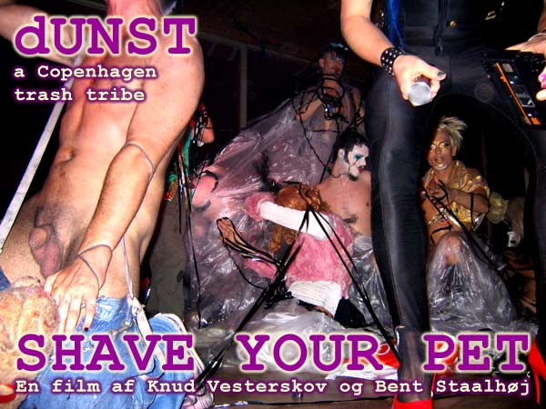

| dunst | Nyhedsbrev |
| København - 12. Oktober - 2010 | |
| radio dunst 92,9 FM og 88,9 kabel. | Lørdag 16 /10 -2010 |
| På lørdag kl. 19-21. sender dunst radio for bøsser, lebber, transer, bi og Interseksuelle, og andre søde mennesker. Radio værtinder: Maria Maud, Dennis Agerblad og Delores Düchess La Cour. |
| Gay & Lesbian Film Festival | Fredag 29 /10 -2010 |
|
 |
|
Nu kan du se dunst filmen til Gay & Lesbian Film Festival 2010. Den går fredag 29. Oktober. Kl. 19:00 Læs om filmen her: http://cglff.dk/film_a_-_aa/?film=67 |
|
| Digt af Hairwerk |
| Tina tina luk vinduet op.. Mor har lunt den cykel! Solen skinner ja vejret i top.. Så på på med din sonja rykel. .. Hm lige t tansk toppen.... It ku faldari faldara med numsen bar... IHjemme laet g-streng hurra hurra højt at flyve på høje hæle. Flaprende i vinden med de gæve.. Svar udbedes hvis kroppen er under trans.. Port...over 60 km i timen... |
| Hvis du vil leve et kedeligt liv uden dunst så afmeld dunst Nyhedsbrev på forsiden af www.dunst.dk |